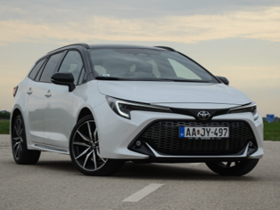
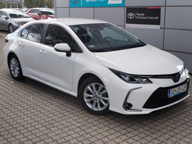
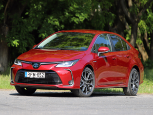
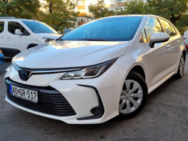
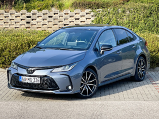
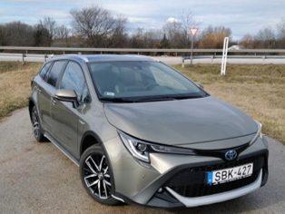
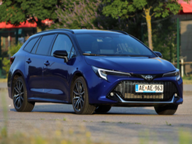

Toyota Corolla 1.8
Szombathely
2019
Hybrid
120LE
215 000 km
Automata
3.000 Ft / óra

Toyota Corolla 1.4 SPORT ICE
Budapest
2013
Benzin
98LE
276 050 km
Manuális
2.800 Ft / óra

Toyota Corolla 1.8
Zalaegerszeg
2008
Benzin
90LE
304 522 km
Manuális
1.250 Ft / óra

Toyota Corolla 2.0 Dynamic Force
Szombathely
2021
Hybrid
130LE
181 000 km
Automata
4.500 Ft / óra

Toyota Corolla Sedan 1.8
Nagykanizsa
2016
Benzin
110LE
200 330 km
Manuális
3.100 Ft / óra

Toyota Corolla Sedan 1.8
Sopron
2012
Benzin
105LE
288 051 km
Manuális
2.250 Ft / óra

Toyota Corolla Trek 1.8
Győr
2019
Benzin
118LE
105 030 km
Automata
4.100 Ft / óra

Toyota Corolla Trek 1.8
Debrecen
2017
Hybrid
125LE
267 231 km
Manuális
3.350 Ft / óra